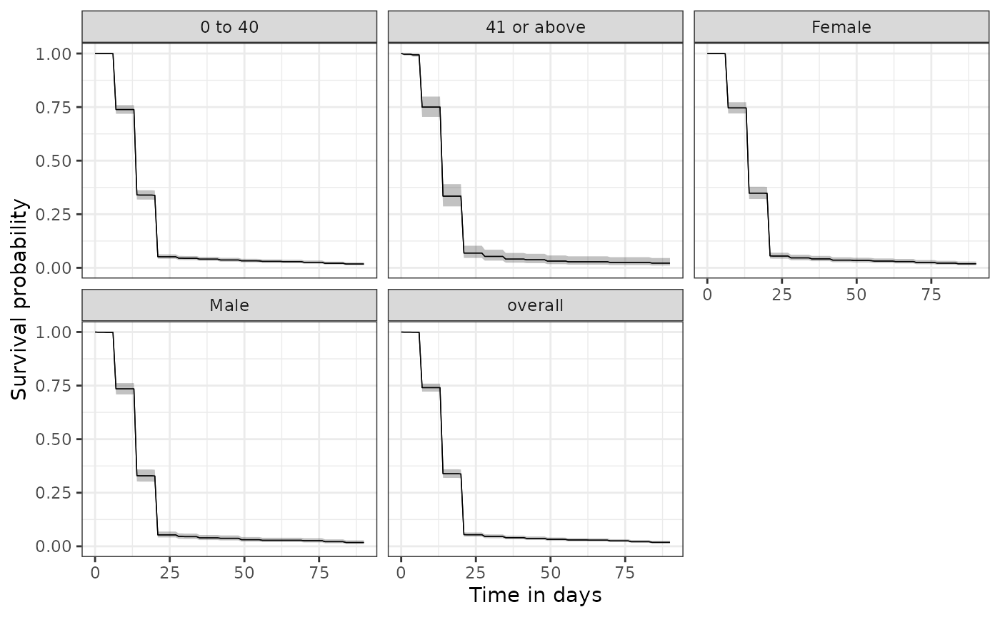

Assessing time to treatment discontinuation
treatment_discontinuation.RmdIntroduction
Time-to-discontinuation is commonly of interest when summarising adherence to medications.
Time-to-discontinuation of amoxicillin
For example, let’s say we would like to study time-to-discontinuation among new users of amoxicillin in their first 90-days of use. For this we can first create our amoxicillin study cohort, restricting to first occurrence in history. We can then estimate Kaplan-Meier survival curves we can use estimateSingleEventSurvival from the CohortSurvival package, with the follow-up beginning from an individual’s cohort start date and discontinuation occurring at their cohort end date.
Here we’ll use the synthetic Eunomia dataset to show how this could be done.
library(CDMConnector)
library(PatientProfiles)
library(DrugUtilisation)
library(CohortSurvival)
library(dplyr)
db <- DBI::dbConnect(duckdb::duckdb(),
dbdir = eunomia_dir())
cdm <- cdm_from_con(
con = db,
cdm_schema = "main",
write_schema = "main",
cdm_name = "Eunomia"
)
cdm <- generateIngredientCohortSet(cdm = cdm,
name = "amoxicillin",
ingredient = "amoxicillin",
gapEra = 7)
cdm$amoxicillin <- cdm$amoxicillin |>
requireIsFirstDrugEntry()
discontinuation_summary <- estimateSingleEventSurvival(cdm,
targetCohortTable = "amoxicillin",
outcomeCohortTable = "amoxicillin",
outcomeDateVariable = "cohort_end_date",
followUpDays = 90,
eventGap = 30)We can plot our study result like so:
plotSurvival(discontinuation_summary)
Or we can similarly create a table summarising the result
tableSurvival(discontinuation_summary)| CDM name | Cohort | Outcome name | Number records | Number events | Median survival (95% CI) | Restricted mean survival (SE) |
|---|---|---|---|---|---|---|
| Eunomia | 723 amoxicillin | 723 amoxicillin | 2,126 | 2,087 | 14.00 (14.00, 14.00) | 17.00 (0.00) |
We can also easily stratify our results. Here we add patient demographics to our cohort table using the PatientProfiles packages and then stratify results by age group and sex.
cdm$amoxicillin <- cdm$amoxicillin |>
addDemographics(ageGroup = list(c(0, 40),
c(41, Inf))) |>
compute(temporary = FALSE, name = "amoxicillin")
discontinuation_summary <- estimateSingleEventSurvival(cdm,
strata = list(c("age_group"),
c("sex")),
targetCohortTable = "amoxicillin",
outcomeCohortTable = "amoxicillin",
outcomeDateVariable = "cohort_end_date",
followUpDays = 90,
eventGap = 30)Again we could present our results in a plot or a table.
plotSurvival(discontinuation_summary,
facet = "strata_level")
tableSurvival(discontinuation_summary)| CDM name | Cohort | Age group | Sex | Outcome name | Number records | Number events | Median survival (95% CI) | Restricted mean survival (SE) |
|---|---|---|---|---|---|---|---|---|
| Eunomia | 723 amoxicillin | Overall | Overall | 723 amoxicillin | 2,126 | 2,087 | 14.00 (14.00, 14.00) | 17.00 (0.00) |
| 0 to 40 | Overall | 723 amoxicillin | 1,806 | 1,774 | 14.00 (14.00, 14.00) | 17.00 (0.00) | ||
| 41 or above | Overall | 723 amoxicillin | 320 | 313 | 14.00 (14.00, 14.00) | 17.00 (1.00) | ||
| Overall | Female | 723 amoxicillin | 1,059 | 1,039 | 14.00 (14.00, 14.00) | 17.00 (0.00) | ||
| Male | 723 amoxicillin | 1,067 | 1,048 | 14.00 (14.00, 14.00) | 17.00 (0.00) |